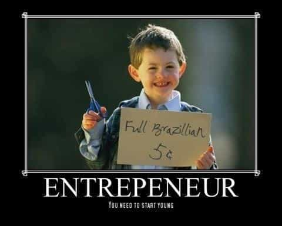
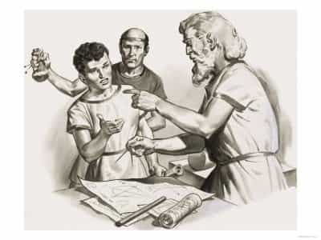
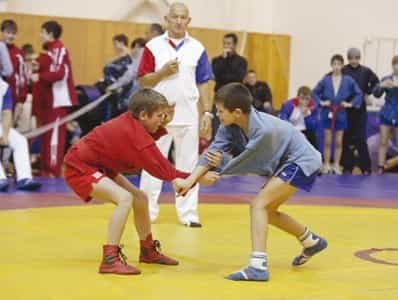
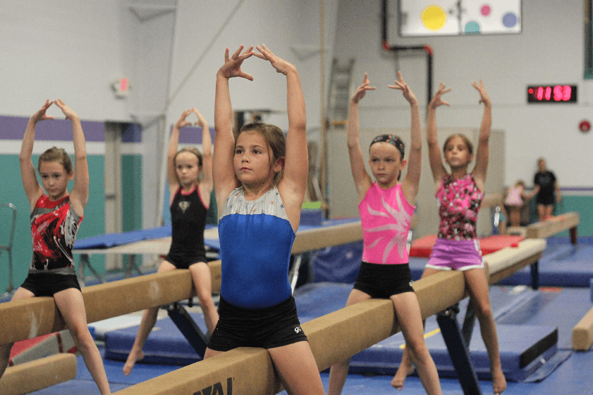
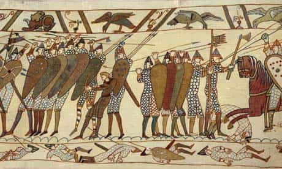
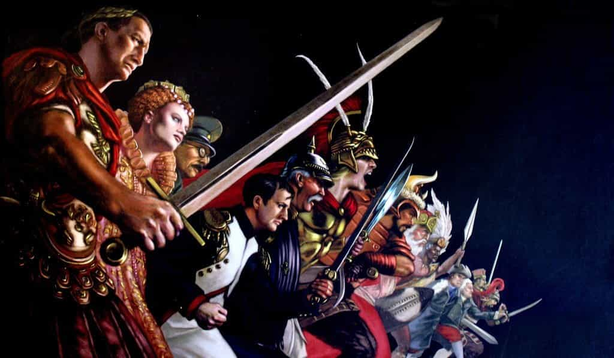
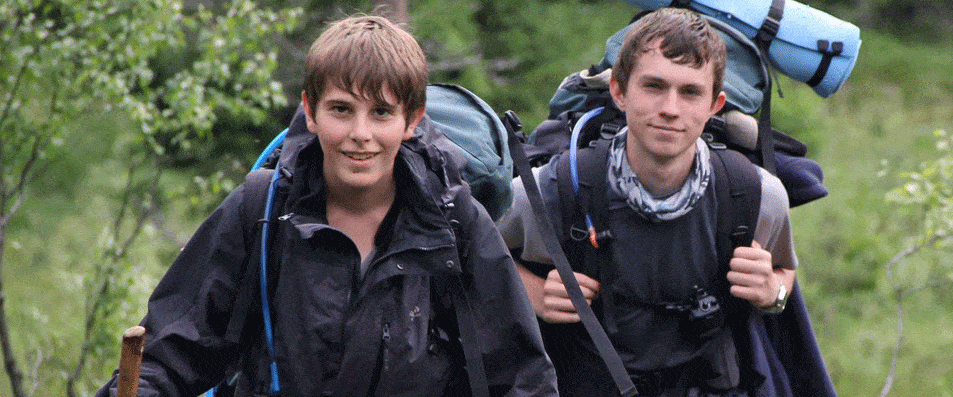
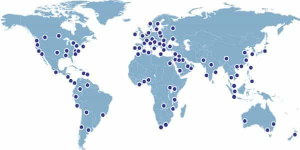
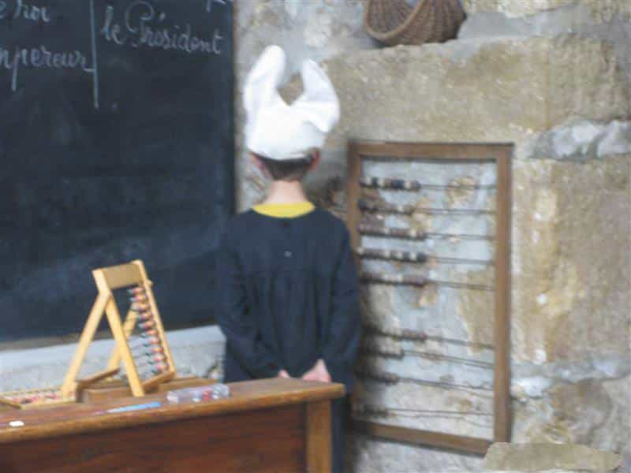

< < < Back
14 Essential Subjects That We’ll Teach Children At The ROK International School – Return Of Kings
As I get older, I need to plan ahead and choose between a life of casual sex, a life focused on family, or reconcile the two. But whatever the choice, I intend to have children. Once I turn again into soil, I want my name to live on.
A debate is raging among us who want to have children about education. Some are strong partisans of home schooling. I for one have seen the damage caused to children who did not socialize with others. I cannot imagine an education for my progeny without being with their peers. On the other hand, there is no way I will drop them into today’s toxic school system.
The solution? Welcome to the newly created ROK K-12 International Boarding School. The courses for our students will span from the age of 5 until they reach 18.
Our Board Of Education (B.O.E.)
The board is the supreme authority in matter of education and the choice of the subjects. Once fathers read our conditions and sign, they have no right to influence what we teach or not. We will closely monitor the child’s progress with them.
There will be no interventions by parents regarding our disciplinary procedures. We are the law. They can always choose another school. We insist on the fathers completing the education of their children at home as much as humanly possible.
Our school will not be free, but it will be cheaper than the zombie factories they call schools nowadays. Should our school prove successful in results and satisfaction of the parents, we can think about creating a University. Now we move on to the main subjects taught at the school.
1. Practical knowledge and economy

It will include life lessons and tips with subjects as broad as “How to generate stable income?”, “How to pay your taxes (or not)?”, “1001 methods for success in life and in battle,” “How the system is rigged,” and “Stop buying shit you don’t need.”
2. Oratorical arts, eloquence, and politeness class

How to speak well in public. Good manners, etiquette and respect of the elders. The keys to convince your audience. How to establish an argumentation based on facts (does not apply to green-haired landwhales).
3. Manual crafts

Optional course if the fathers sign a note ensuring that this is being taught at home. It will include wood working, plumbing, how to repair a roof, build a house or a boat, change tires, metalworking, welding, and how to fix a car.
4. Foreign languages
Courses will be given in English, as it will be the native tongue of the majority of the parents and children, but foreign language options will be included. Chinese, German, Spanish, French and others can be taught as a second language. A Latin or Ancient Greek option is available.
5. English

A tremendous part of our school’s program. It will include dictation, reading, creative writing, handwriting, and calligraphy, plus spelling classes.
It will also focus on how to correctly address people and write spotless correspondence without spelling mistakes. The literature used as a resource will have to be approved by the B.O.E.
6. Sports

Compulsory course. Mens sana in corpore sano.
Sports for boys will include effective martial arts (boxing, jiu jitsu, wrestling, sambo, muay thai), weightlifting (adapted to their young age and growth), fitness, shooting etc. The board is currently discussing incorporating football, basketball, rugby and medieval fencing or proposing them as optional. Fathers’ suggestions are welcome.

Sports for girls will include gymnastics, fitness (limited weight training), equestrian sports, and dancing. Regular competitions and school carnivals will be held.
7. Mathematics
The basics will be taught: addition, subtraction, multiplication, division, spatial geometry, percentages. If more is needed, a maths club could be created as an extracurricular activity. Personally, you will find my sons at the game workshop.
8. History

A dominant subject which will not be squashed in a joint course with geography. It will teach the glory of Ancient Rome, Ancient Greece, the Middle Ages, the Renaissance (how we softened up), and the Revolutions (mainly listing traitors and the dark forces that work behind the curtain), the World Wars, and our vision of contemporary history and how it all went bloody head over biscuit.

Focus will be brought on historical figures such as great leaders, war chiefs, tactical geniuses, male explorers and scientists and European History without neglecting great minds from abroad.
Fathers are strongly advised to bring additional historical knowledge to their children in the comfort of their own home. But if you want the history of softies or feminists, you are more than welcome to choose another school.
9. Outdoor activities (for boys)

Navigation, trek, botanical knowledge, tracking, shelter building, fire making, survival techniques, first aid, etc.
10. Game (for boys)
Neomasculinity, frame keeping, the history of the red pill, “zero fucks given” course, night game, day game and University game. Basics in dancing. Escalation 101 and body language studies. Dads are required to do their part at home.
11. Feminine values (for girls)
Cooking, being a good host, sewing, childcare, infant first aid, etiquette, child nutrition, manners, eloquence, household economy, how to behave and not to behave in society, the keys on being feminine, art class. No focus will be given on a hypothetical professional career. The school will focus on making future wives and mothers out of them.
12. Theology, morals, and justice

This one has to be discussed by the B.O.E before including it or not in our curriculum, as every man has a different approach to it and a different idea of what good is.
Also which religion(s) will be taught and to what extent? It could be an optional course chosen by the fathers, or it could be entirely their responsibility.
13. Cultural and travel studies
This one is self-explanatory. Geography, civilizations, capitals, landscapes of the world etc. However, the school will not teach students everything. They will have to complete the study on their own. Our school will include a dedicated program of overseas excursions, to prepare our young minds to study abroad if they wish. Girls will not be allowed to study abroad.
14. Sciences

Biology, physics, anatomy, archaeology, why does my head hurt when I bang it on the table… the works.
FAQs:
Q: Will my children watch television at school or have access to the Internet?
A: No television or internet available at school apart from the video resources necessary for the lessons, under strict control of the teachers and the B.O.E.
Q. Where will the school be situated?
A: In a country where school is not compulsory, or where we can use the local laws on home schooling to our advantage. There we can create and fund our school. It will be implanted in a land that respects traditional family values and models.

Q. Why should I choose the ROK school for my children?
A: The school will protect your progeny from the toxic influence of modern multicultural society. Our goal is to run in autonomy from the rest of the world while the child’s mind is still developing. After that, it is up to you.

Q. Is this project realistic?
A: If the degenerates from Gaia Democratic School have the legal right to teach after taking kids on a field trip to a sex shop, so do we.
Q: Who are the teachers?
A. Our method of recruitment for the best teachers available will be drastic and merciless. Main subjects will be taught by male teachers except the board-approved feminine activities teachers. Extracurricular activities can be taught by approved female teachers provided that they are capable, young, pretty, and feminine.

Q. How about discipline?
A. Discipline will be dealt with internally. It will be severe but just. If the teacher does not have authority, how can he be expected to teach?

Q. How does my child qualify for the school?
A: A long and thorough inquiry on the father will be lead by the board. The application reviewed by the board will be accepted or not based on the father’s criteria and interview, but also the physical and mental abilities of the child.
Q. Should the mother be present during the inquiry?
A: No, since the school’s kitchen will be closed during the father’s interview.
Additional questions will have to be addressed:
- Should our teachers use corporal punishment?
- Should there be an uniform?
- Should girls be able to attend the school at all? Should they have common classes with the boys?
- Should we aim at awarding a diploma that complies with international standards?
- How close should it be to the Prussian Education system?
- Who among our eminent writers should teach and which subjects?
- Should the school be guarded by armed security? (Our program would make more than one feminist froth to the mouth and create more enemies that we already have.)
We welcome your suggestions on the additional courses that should be implemented in our future school’s program.
Read More: Being Popular In School Is Overrated